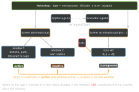

swiftui · folio
In one line: A SwiftUI app is a value: @main struct MyApp: App whose body returns
scenes. A scene is a template the system instantiates into one or more windows
(UIWindowScenes), each with its own view tree, @State, @SceneStorage and
scenePhase. UIKit’s delegates come back through an adaptor; URLs, activities and background
wake-ups are delivered to scenes by modifiers.
Download PDF Print view LaTeX source

How it works
@mainon anAppgeneratesmain().App.init()runs once, before any scene.@Stateon the App = process-wide model, injected into every window via.environment(store); state in a root view = one copy per window.scenePhase(.active / .inactive / .background): in a view = the containing scene; in theApp= aggregate —.activeif any scene is,.background= app going to background..inactive= visible, not interactive (switcher, Control Center) — pause, don’t tear down.- UIKit hooks:
@UIApplicationDelegateAdaptor— once, in theApp(twice = runtime error); SwiftUI creates it; anObservableObjectone lands in the environment. Push token, SDK setup. Scene delegate:delegateClasson theUISceneConfigurationreturned fromconfigurationForConnecting. - Incoming:
.onOpenURL— custom schemes and Universal Links, as URLs;.onContinueUserActivity(type)— Handoff, Spotlight;.handlesExternalEvents(matching:)picks the window. - Outgoing (environment):
openURL(ownOpenURLAction:.handled / .discarded / .systemAction);openWindow(id:/value:)(16) — a window already showing the value comes forward;dismissWindow(17);supportsMultipleWindows. - Persistence:
@SceneStorage— per window, system-restored, small, no secrets, dies with the scene.@AppStorage—UserDefaults, shared by all windows. .backgroundTask(.appRefresh("id"))(16): done when the closure returns, then suspended; cancelled on timeout. Still needs the id inBGTaskSchedulerPermittedIdentifiers+ a submittedBGAppRefreshTaskRequest..commands { CommandMenu …}: macOS menu bar; iPadOS: Cmd-hold HUD + menu bar.
Scene types
WindowGroup | all | template; many windows on iPad / Mac |
WindowGroup(for: T.self) | 16 | a window per value |
DocumentGroup | 14 | browser, open / save, window per doc |
Window | macOS 13 | single unique window, not iOS |
Settings, MenuBarExtra | macOS | preferences; menu-bar item |
Remember
“App = the process, Scene = a template, Window = an instance with its own state and phase.”
App, scenes, windows, phases

Example
@main struct NotesApp: App {
@UIApplicationDelegateAdaptor(AppDelegate.self) var delegate
@State private var store = NoteStore() // shared
@Environment(\.scenePhase) private var phase // aggregate
var body: some Scene {
WindowGroup { RootView() }.environment(store)
.onChange(of: phase) { _, p in
if p == .background { store.save(); scheduleRefresh() } }
.backgroundTask(.appRefresh("com.example.sync")) {
await store.sync() } // return = done
WindowGroup("Note", id: "note", for: Note.ID.self) { $id in
NoteWindow(id: id) }.environment(store)
} }
struct RootView: View {
@SceneStorage("sel") private var sel: String? // per window
var body: some View { NoteList(sel: $sel)
.onOpenURL { sel = Route($0)?.noteID } } }Traps
- Saving on
.inactiveonly, or in one window’sonChange— use the App-level.background; per-window phases fire once per window. @AppStoragefor a selection: two iPad windows overwrite each other —@SceneStorage..backgroundTaskwith no submitted request / Info.plist id never runs; timing is the system’s.Window,Settings,MenuBarExtraare not iOS —#if os(macOS).- TN3187: a UIKit app without the UIScene life cycle, built with the SDK after iOS 26, won’t launch. SwiftUI
Appis scene-based already.
UIKit callback → SwiftUI
didFinishLaunching | App.init / adaptor |
sceneDidBecomeActive … | onChange(of: scenePhase) |
scene(_:openURLContexts:) | .onOpenURL |
scene(_:continue:) | .onContinueUserActivity |
stateRestorationActivity | @SceneStorage, path.codable |
BGTaskScheduler.register | .backgroundTask(.appRefresh) |
push token, UNUserNotificationCenter delegate | the adaptor’s delegate methods |